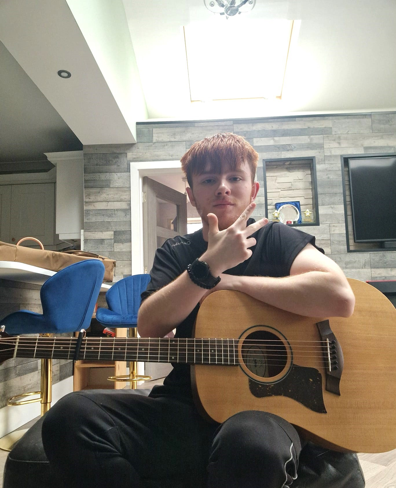
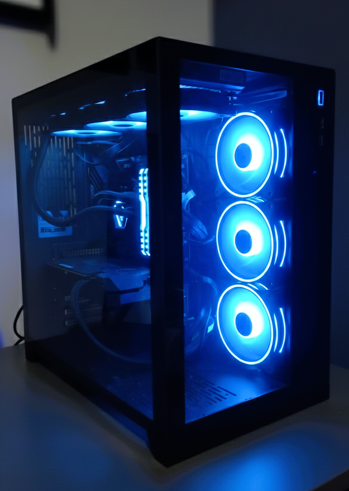

About Me
Early Life
Skills
Hobbies
Milestones
Education
The Future
Early Life
Being born in 2005 means I grew up right in the middle of the upcoming digital age. Throughout my life I was surrounded by tech, new and old, from Windows 7 and the Wii, to the iPhone 4 and the explosion of a new era of video on YouTube.
This technology foundation would follow me all the way through my life. In primary school I used to submit my homework using Microsoft Word. I quickly got the reputation as the “tech kid” - Teachers & family would look to me to fix their technology related issues such as a sound error or a broken phone. My teachers wouldn't be surprised that I took up a degree in Computer Science!
My love of computers would only evolve as I got older, entering secondary school I learned about writing code and the endless possibilities it could have. During lockdown I spent weeks researching and learning about computers before I finally bought the parts and built my own PC.
Later in life I would go on to become the lead editor of my school's talent show & end of year slideshow of memories. I continued building PC's including upgrading my own and designing and building 2 others for family members before finally discovering Computer Science as a degree in University.
After a summer spent in the USA, I developed a deep interest in Cybersecurity - I found the idea of digital security captivating and decided that was what I wanted to pursue after University.
Technology has accompanied me hand in hand throughout my childhood & school life, and I wouldn't have it any other way. I find it so fascinating both from a hardware and software perspective and really believe that there is no better place for me.
Skills
- Adaptability Ability to think quickly and respond effectively in evolving and fast-paced environments
- Creativity & Innovation Highly creative with strong experience in video and photo editing, as well as digital design
- Willingness to Learn Proactive mindset with a strong commitment to continuous learning and upskilling
- Critical Thinking & Problem Solving Capable of thinking outside the box to develop efficient and practical solutions
- Communication Clear, concise, and coherent communication within teamwork-driven spaces
- Interpersonal Skills Polite, patient, and understanding when working with colleagues and teams
- Technical Proficiency Working knowledge of frontend(HTML, CSS),Java, SQL, and introductory Python
- Digital Tools & Platforms Experienced with tools including VS Code, Canva, Burp Suite, and Google Workspace
- AI & Emerging Technologies Experience working with AI tools and agents, with proficiency in Windsurf and Gemini, and an understanding of their applications in modern workflows
Hobbies
Music is a constant backdrop in my life. Whether I'm traveling, studying or working, it's rare to find me without a soundtrack playing.
My music tastes lean heavily towards eclectic. My favourite artists include Eminem & Oasis. My favourite albums are The Eminem Show & Whats The Story Morning Glory, in my opinion the definition of perfect albums. Recently I have been embracing my Irish culture and have been listening to bands like Picture This & Simple Things.
That passion extends beyond just listening as I have also been playing guitar for close to 7 years now. For me it's a great sense of escape and seems to always make me feel better after a session. I play a lot of Oasis (no surprise there) - My favourite songs to play are Magic Pie, Slide Away & Revival, I recently got a new Taylor acoustic guitar and couldn't be happier with the sound profile and the feeling of my new axe has made playing even more enjoyable.

Video Games have always been a part of my life as I grew up with iconic consoles such as the PS2 & the Wii. Gaming was my first introduction to digital adventure and creativity.
Growing up some of my favourite games were Ratchet & Clank and Mario Kart for the Nintendo DS, as I got older I got a PS3 & later a PS4, and explored game series such as Call of Duty and Grand Theft Auto, My personal standout is the Far Cry series; I'm currently replaying Far Cry 5, which remains my favorite game of all time. A game series that remains on my list to play is Assassins Creed.
My interest in tech quickly expanded beyond the screen. During the 2020 lockdown, I delved deep into the world of PC hardware. I became fascinated by the architecture of these machines and built my first PC at just 14 years old. Since then, I’ve built two more for family members alongside my own custom upgrades. My current rig runs an i7-10700F paired with a 1660 Super, and I’m already planning the next evolution of my setup.

When it comes to TV & Movies I'm a sucker for rewatching series I love. While I enjoy discovering new stories, there's a unique comfort in the predictability of a series I already love. It's the perfect way to unwind after a long day.
My cinematic favourites include 8 Mile, a music movie masterpiece starring Eminem as B-Rabbit. 6 Underground for its high octane action that satisfies the adrenaline rush, on the more emotional side A Dogs Purpose is a film that always resonates with me, alongside other staples such as Top Gun, Big Hero 6 & The Dark Knight Rises.
TV shows are quite varied, I like a mix of comedy, tension and exceptional acting. I’ve been captivated by the high stakes of Money Heist, Shooter, and The Queen's Gambit, but I also hold a deep appreciation for gritty dramas like Love/Hate. For pure escape, my "comfort shows" include Suits, Brooklyn 99, and The Big Bang Theory. Whether it’s a gripping thriller or a lighthearted sitcom, these stories provide the immersion and freedom that make for a much-needed escape.

Milestones
- Student of the Year 2022 Had the fortune of winning Student of the Year for exceptional work and extra curricular activities during the school year
- Courtesy and Politeness Award 2018 For consistently demonstrating courtesy,kindness and respect towards staff and my fellow classmates
- 4 Subject Awards (2022-2024) For excellence in subjects such as Drama, French , Geography & LCVP including projects, essays and presentations
- Edited/Produced The School Talent ShowInvolved videography, editing software and sound design to showcase the immense talent present in my school
- Took part in fundraising for Pieta HouseLed a walk dedicated to raising awareness and funds for mental health, Which resulted in over €2500+ donated to the cause
- Involved in Greenschools (2017-2018) An initiative dedicated to promoting sustainable energy and lifestyle across Ireland, including businesses and schools nationwide
- Spent a Summer living/travelling in the USA Spending a summer living the American lifestyle and getting to visit places such as New York, New Jersey, Maryland & Washington D.C. helped me learn independence and many life skills
Education
- Secondary School | The Leaving Certificate (2018 - 2024)Completed the Leaving Certificate in 2024, achieving 450+ points. This result placed me in the top 30% of students nationwide, reflecting a high level of academic dedication and consistency. Throughout my six years, I maintained an exceptional record in projects, examinations, and community reputation.
- BSc in Computer Science | Maynooth University (2024 - Present) Currently in my second year, focusing on core foundational pillars of technology. I have successfully completed modules in Data Structures and Algorithms, Computer Architecture, and Operating Systems, providing me with a deep understanding of how software interacts with hardware at a fundamental level.
The Future
Completing my bachelors degree at Maynooth University is only the beginning of my journey, with my final destination being one where I can make a real change in people's lives through technology.
I have my sights set on Cybersecurity. The sector responsible for protecting assets and data through defensive and offensive techniques. Cybersecurity is a keen interest for me, particularly Incident Response with a later transition into Security Architecture when I gain more experience and reputation. The dream is to work in a bank or for a company like Cloudflare who specialise in secure networks and asset protection through threat detections and firewalls.
Incident Response excites me due to its high tension, under pressure environment due to incoming threats and breaches. A later move to Security Architecture with experience and a background in incident responding will make me more knowledgeable and valuable in the field.
Whether cyber sees me stay in Ireland or potentially move to America, I can't wait to see where it takes me. I want to do right by the people who always supported me and prove the people who didn't wrong.
Lets make the world a better place